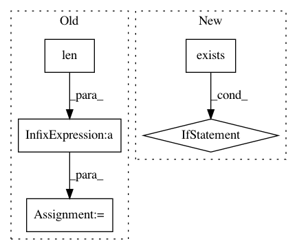

7fffa98b9166a03b4a53fb40202d97b09e8e9036,utils/datasets.py,ListDataset,__getitem__,#ListDataset#Any#,57
Before Change
img = np.array(Image.open(img_path))
while len(img.shape) != 3:
index += 1
img_path = self.img_files[index % len(self.img_files)].rstrip()
img = np.array(Image.open(img_path))
h, w, _ = img.shape
dim_diff = np.abs(h - w)
// Upper (left) and lower (right) padding
After Change
label_path = self.label_files[index % len(self.img_files)].rstrip()
labels = None
if os.path.exists(label_path):
labels = np.loadtxt(label_path).reshape(-1, 5)
// Extract coordinates for unpadded + unscaled image
x1 = w * (labels[:, 1] - labels[:, 3]/2)
y1 = h * (labels[:, 2] - labels[:, 4]/2)
x2 = w * (labels[:, 1] + labels[:, 3]/2)
y2 = h * (labels[:, 2] + labels[:, 4]/2)
// Adjust for added padding
x1 += pad[1][0]
y1 += pad[0][0]
x2 += pad[1][0]
y2 += pad[0][0]
// Calculate ratios from coordinates
labels[:, 1] = ((x1 + x2) / 2) / padded_w
labels[:, 2] = ((y1 + y2) / 2) / padded_h
labels[:, 3] *= w / padded_w
labels[:, 4] *= h / padded_h
// Fill matrix
filled_labels = np.zeros((self.max_objects, 5))
if labels is not None:
filled_labels[range(len(labels))[:self.max_objects]] = labels[:self.max_objects]
filled_labels = torch.from_numpy(filled_labels)
In pattern: SUPERPATTERN
Frequency: 3
Non-data size: 5
Instances
Project Name: eriklindernoren/PyTorch-YOLOv3
Commit Name: 7fffa98b9166a03b4a53fb40202d97b09e8e9036
Time: 2018-05-29
Author: eriklindernoren@gmail.com
File Name: utils/datasets.py
Class Name: ListDataset
Method Name: __getitem__
Project Name: nipy/dipy
Commit Name: a0e81d626e2264fc52fee60b32e8b6f1a2d9f2a7
Time: 2016-01-11
Author: matthieu.dumont@usherbrooke.ca
File Name: dipy/workflow/segment.py
Class Name:
Method Name: median_otsu_bet
Project Name: mlflow/mlflow
Commit Name: 657370491536cbb32662292089769c8e5c04468d
Time: 2019-09-04
Author: 47035943+ahutterTA@users.noreply.github.com
File Name: mlflow/store/hdfs_artifact_repo.py
Class Name: HdfsArtifactRepository
Method Name: list_artifacts